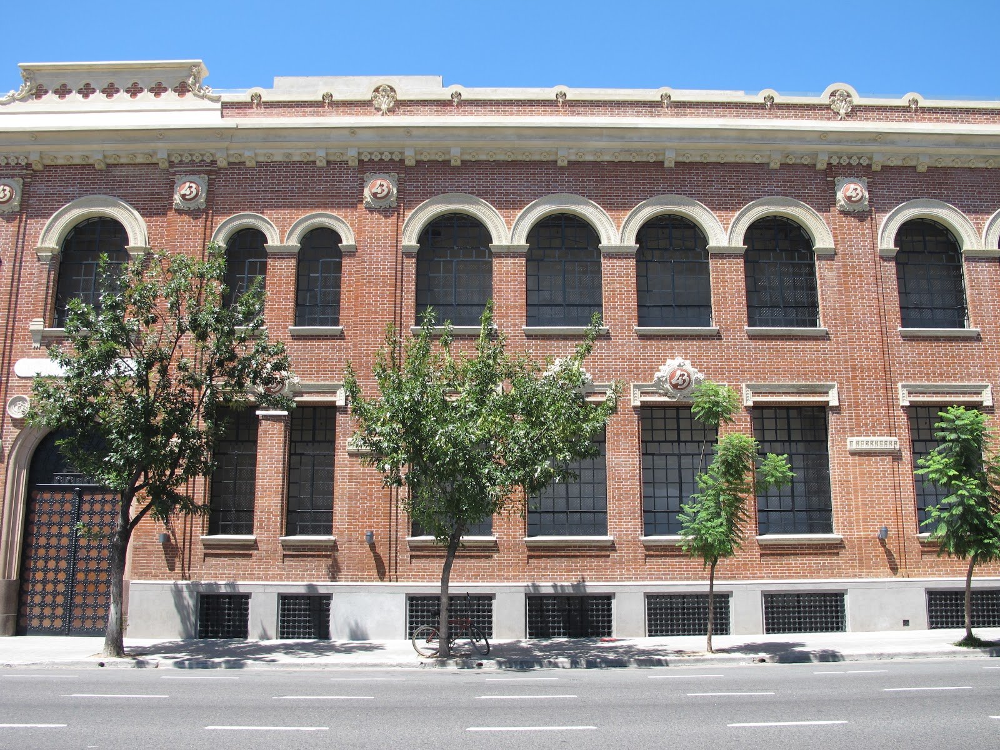

Gluck Pianos
Somos una empresa con más de 20 años en el mercado argentino de pianos. La calidad de instrumentos, los servicios pre y post venta y las exposiciones anuales nos han dado un importante reconocimiento y prestigio a nivel nacional. En Gluck Pianos contamos con músicos profesionales que te orientarán en la compra del piano que mejor se adapte a tus necesidades y gustos. Te invitamos a recorrer nuestra página web y a ponerte en contacto con nosotros haciendo click aquí.
